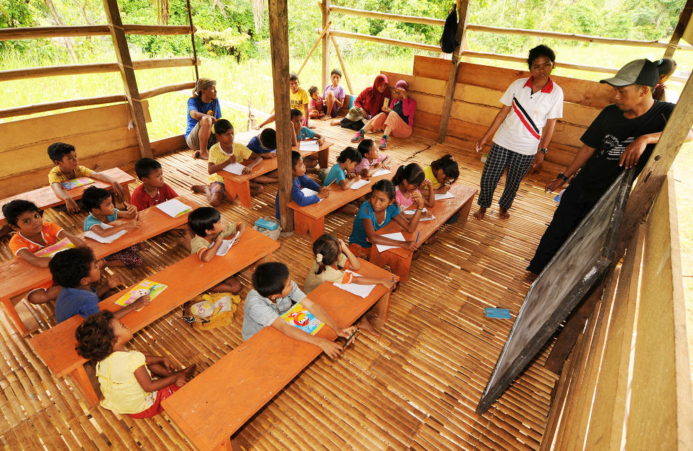

Education

Education is the most powerful tool to break the cycle of poverty. At Matri Sneh Foundation, we focus on providing quality education to underprivileged children.
Our Programs
- School Sponsorship: Covering school fees, books, and uniforms for children.
- After-School Learning Centers: Free coaching and mentorship for students.
- Digital Education: Computer literacy and online learning resources.
- Scholarship Programs: Supporting talented students with higher education opportunities.